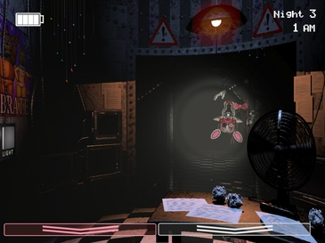

- gameplay
- plot
- characters
The atmosphere was praised. Gamezebo highlighted the sounds, jumpscares, and animatronics,saying they contributed to an overall scary game. PC Gamer said that the game had an excellent environment, and that Cawthon "further establishes his skills at crafting a truly frightening experience". Critics similarly praised the story. Destructoid equated the plot to a complex mystery and highlighted the Atari-style mini games as intriguing and disturbing. TouchArcade found the plot to be satisfying, saying that it was less subtle than the original game's, but was still mysterious.
